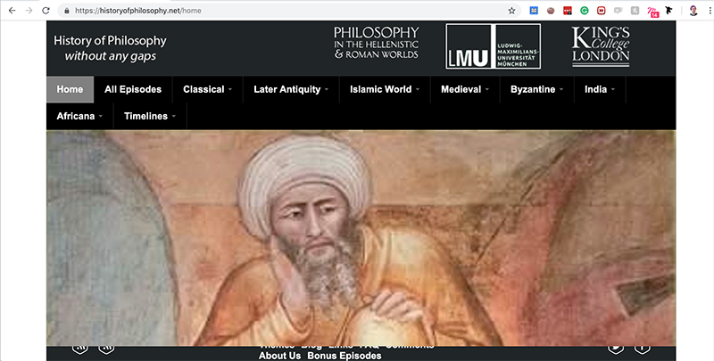

History of Philosophy started as a podcast in 2010 and is currently in its 316th edition. It is the most comprehensive website that was found in terms of content. Especially regarding traditions outside the western school. The content generated in the podcast spurred to other media in three books and the website.
The website has an image carousel in the header showcasing images that regard the black movement with Martin Luther King, Islamic art, ancient paintings, and more recent photographs. This appeals to the content of the podcast that tries to view history beyond the constraints of the western civilization.
Past the header, the website uses a 2 column grid, displaying the latest content in the left and an overview of the books in the right. The content seems to be curated in terms of messaging and semiotics. However, the design could be improved by alleviating the content area that is looking too condensed at the moment. The website uses gradients for the background-color of the latest episodes section, which grants legibility but sacrifices style and visual appeal. The dark theme is very contrasting and the color is not used anywhere but the images.
New Philosopher is a recent publication launched in Australia in 2013. It started at the Byron Bay Writers Festival and has an emphasis on design and social media to spread its content. According to Facebook, in 2015 New Philosopher became the most widely distributed philosophy magazine in the world. Each edition has a theme, interviews and invited contributors that keep the magazine fresh and contemporary.
The website is the most visually compelling from the targeted research. The home has a banner above the fold with a collage showing the latest edition parts and the cover. Directly underneath they open the latest articles section with an h1, showcasing the articles in a grid of 3x2 using card designs to describe the publication and quick info about it. If continuing to scroll down with find a section with past articles, showing the illustrative past editions of the magazine.
The stress on the latest issue is pretty evident and the use of typography and color is done in a balanced manner. The color scheme is mostly monochromatic with a desaturated cherry as accent color. Overall the website is well structured and the information is of easy access.